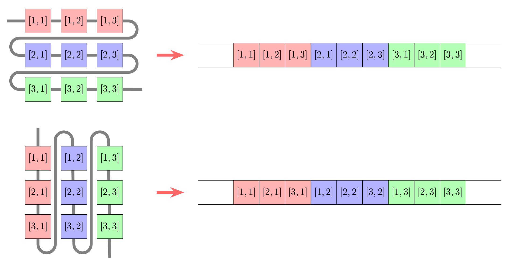

[0.0, 23.0, 42.0]3-element Vector{Float64}:
0.0
23.0
42.0Arrays play a fundamental role in scientific computing. They represent vectors, matrices, and higher-dimensional grids of data. Thus the quality of support for arrays is decisive for the suitability of a programming language for scientific computing. In Julia, arrays are first-class citizens. Not only does Julia provide a feature-comprehensive and very flexible implementation of standard n-dimensional arrays, it’s abstract array interface also makes it very easy to implement custom array types.
This chapter covers the following topics:
Although we already mentioned arrays a few times, in particular in Chapter 1, so far we avoided introducing them. We will now rectify this omission.
An array is a collection of data that is organized in an n-dimensional grid. The data at each grid point is often given by numbers, such as Float64 or Int64, but Julia arrays can hold any data type. The simplest instances of an array are the one-dimensional kind known as vector and the two-dimensional kind known as matrix. These are the typical objects that are manipulated in linear algebra. However, in scientific computing we often also need higher-dimensional arrays, for example to represent data on a three- or higher-dimensional mesh. In the following, we will discuss the various ways to create arrays before discussing Julia’s array type in a little more detail.
In Julia, arrays can be generated much like tuples, but replacing the brackets (,) with square brackets [,]:
[0.0, 23.0, 42.0]3-element Vector{Float64}:
0.0
23.0
42.0This creates a Vector whose elements are all of type Float64 as indicated in the output. An array can also have elements of different types as in the following example:
[0.0, "hello", 6*7]3-element Vector{Any}:
0.0
"hello"
42This creates a vector with elements of type Any. When an array is initialized with values of different types, Julia tries to promote all values to a common type. If this is not possible due to a lack of appropriate promotion rules, the element type of the array is determined to be Any. The topic of promotion will be discussed in more detail in Chapter 5.
Julia arrays are largely implemented in Julia itself. High performance is achieved through the specialization of code to the specific element type by the compiler. Note, however, that the generation of high-performance code is only possible for arrays with concrete element types such as Float64 or Int64, but not for arrays with abstract types such as Real or Any.
In the last example, we initialize the array with a Float64, a String, and an Integer. While Float64 and Integer can be promoted to Float64, numbers and strings cannot be promoted to a common type, thus the element type of the array is Any. The situation is slightly different if we initialize the array with values of different number types:
[0.0, 460//20, 6*7]3-element Vector{Float64}:
0.0
23.0
42.0Here, we initialize the array with a Float64, a Rational, and an Integer, all of which can be promoted to Float64.
Note that promotion usually applies conversion to a type that can faithfully represent all of the original values but not always. A typical example is the promotion of a Rational and some AbstractFloat, where truncation can happen as in the following example:
[1.0f0, 2//3]2-element Vector{Float32}:
1.0
0.6666667It is also possible to specify the element type explicitly:
Rational[1.0f0, 2//3]2-element Vector{Rational}:
1
2//3If an empty array is constructed, it is of type Any by default.
[]Any[]Arrays with more dimensions than a vector, such as a matrix, can be generated with different literals. The simplest and most visual way to create a matrix is as follows:
[1 2
3 4]2×2 Matrix{Int64}:
1 2
3 4It is also possible to concatenate two or more vectors, higher-dimensional arrays or scalars. Concatenation is denoted by newlines or single semicolons for vertical concatenation, and spaces, tabs or double semicolons for horizontal concatenation:
[[1,2] [3,4]]2×2 Matrix{Int64}:
1 3
2 4[[1,2];; [3,4]]2×2 Matrix{Int64}:
1 3
2 4[[1,2]
[3,4]]4-element Vector{Int64}:
1
2
3
4[1; 2; 3; 4]4-element Vector{Int64}:
1
2
3
4[1;; 2;; 3;; 4]1×4 Matrix{Int64}:
1 2 3 4[1 2 3 4]1×4 Matrix{Int64}:
1 2 3 4The semicolon notation is the most versatile as it applies to arbitrary-dimensional arrays. A single ; concatenates the first dimension, two ;; concatenates the second dimension, and so on.
Julia provides several functions that simplify the generation of arrays, e.g., with typical initial values, such as zeros, ones, or other scalars, random numbers, ranges, or concatenations of existing arrays.
The functions zeros(dims...) and ones(dims...) generate arrays that are pre-filled with the respective values:
zeros(3)3-element Vector{Float64}:
0.0
0.0
0.0ones(2, 2)2×2 Matrix{Float64}:
1.0 1.0
1.0 1.0They can be called with an arbitrary number of lengths per dimension and they also allow to specify a number type T as the first argument in zeros(T, dims...) and ones(T, dims...):
ones(Int, 2, 2)2×2 Matrix{Int64}:
1 1
1 1Similarly, fill(x, dims...) can be used to generate any array with dimensions dims that has x set to all its values:
fill(π, 2, 2)2×2 Matrix{Irrational{:π}}:
π π
π πThe functions rand(T, dims...) and randn(T, dims...) provide arras prefilled with uniformly distributed or normally distributed random values, respectively:
rand(Float32, 2, 2)2×2 Matrix{Float32}:
0.993133 0.437135
0.64229 0.890833As with zeros and ones, the type parameter T can be omitted:
randn(2, 2)2×2 Matrix{Float64}:
1.15147 -1.37344
0.5068 0.781393If an array shall be initialized not with constant or random values but with a range of values, the function range(start, stop, n) can be used:
range(1, 2, 11)1.0:0.1:2.0This command does not actually construct an array but a generator for an array. To obtain the corresponding array, we need to apply the collect function or enclose the expression followed by ; in square brackets:
collect(range(1, 2, 3))3-element Vector{Float64}:
1.0
1.5
2.0[range(1, 2, 3);]3-element Vector{Float64}:
1.0
1.5
2.0New arrays can also be created from existing ones by concatenation via cat(A...; dims), hcat(A...), and vcat(A...), where A is a list of arrays and dims are the dimensions along which to concatenate:
cat(ones(2, 2), zeros(2, 2); dims=1)4×2 Matrix{Float64}:
1.0 1.0
1.0 1.0
0.0 0.0
0.0 0.0cat(ones(2, 2), zeros(2, 2); dims=2)2×4 Matrix{Float64}:
1.0 1.0 0.0 0.0
1.0 1.0 0.0 0.0cat(ones(2, 2), fill(2.0, 2, 2); dims=(1,2))4×4 Matrix{Float64}:
1.0 1.0 0.0 0.0
1.0 1.0 0.0 0.0
0.0 0.0 2.0 2.0
0.0 0.0 2.0 2.0The command vcat(A...) is the same as cat(A...; dims=1) or [a; b; c] if A = (a,b,c). Similarly, hcat(A...) is the same as cat(A...; dims=2) or [a b c] or [a;; b;; c].
Julia also supports zero-dimensional array, which can be created by omitting the dimensional arguments to zeros, ones or fill:
zeros()0-dimensional Array{Float64, 0}:
0.0fill(3)0-dimensional Array{Int64, 0}:
3Next, we will see how to generate arrays whose values are initialized by evaluating a formula or a function.
Comprehensions allow for the initialization of arrays with the result of arbitrarily complex expressions that are evaluated on a range of values for each of their arguments. Two simple examples of a one- and a two-dimensional array are the following:
[ x^2 for x in 1:3 ]3-element Vector{Int64}:
1
4
9[ cos(π*x) * sin(π*y) for x in 0:1//2:1, y in 0:1//2:2 ]3×5 Matrix{Float64}:
0.0 1.0 1.22465e-16 -1.0 -2.44929e-16
0.0 6.12323e-17 7.4988e-33 -6.12323e-17 -1.49976e-32
-0.0 -1.0 -1.22465e-16 1.0 2.44929e-16The dimension and size of the resulting array depend on the number of arguments and elements in the respective ranges. The element type depends on the result of the expression. Should the expression return values of different types depending on its input values, Julia tries to promote them to a common type in the same way as with array literals. Similarly, the element type can also be specified explicitly:
Float32[ x^2 for x in 1:3 ]3-element Vector{Float32}:
1.0
4.0
9.0If the square brackets are replaced with normal brackets, a comprehension returns a generator, similar to the range command in the previous section:
(x^2 for x in 1:3)Base.Generator{UnitRange{Int64}, var"#15#16"}(var"#15#16"(), 1:3)Generators are objects that do not precompute their return values but can be evaluated on demand. When we enclose a generator in square brackets or pass it to collect, it is evaluated on all specified values for its arguments and the result is written into an array of the appropriate dimension.
Julia comes with a comprehensive library of linear algebra operations. While some are defined in Base, most are contained in the LinearAlgebra module of the standard library.
Let us also define some example vectors x and y and a matrix A that we will use repeatedly in the examples:
x = [3, 2, 1]; y = [1, 2, 3]; A = [1 2 3; 2 1 0; 3 0 1];The standard multiplication operator * denotes vector-vector, matrix-vector, matrix-matrix, etc., multiplication:
A * x3-element Vector{Int64}:
10
8
10If the size of the arrays does not match, this operation will not be successful:
x * yLoadError: MethodError: no method matching *(::Vector{Int64}, ::Vector{Int64})
Closest candidates are:
*(::Any, ::Any, ::Any, ::Any...)
@ Base operators.jl:587
*(::SparseArrays.CHOLMOD.Sparse, ::VecOrMat)
@ SparseArrays /Applications/Julia-1.10.app/Contents/Resources/julia/share/julia/stdlib/v1.10/SparseArrays/src/solvers/cholmod.jl:1218
*(::LinearAlgebra.UniformScaling, ::AbstractVecOrMat)
@ LinearAlgebra /Applications/Julia-1.10.app/Contents/Resources/julia/share/julia/stdlib/v1.10/LinearAlgebra/src/uniformscaling.jl:262
...Thus, to compute the scalar product of two vectors, the left vector needs to be transposed, which can be achieved by appending the adjoint operator ' to the vector:
x' * y10This is not the same as taking the adjoint of the right vector:
x * y'3×3 Matrix{Int64}:
3 6 9
2 4 6
1 2 3Note that the adjoint operator does not only transpose the array but also applies complex conjugation in the case of complex-valued arrays. For real-valued arrays, this does not make a difference. However, if strict transposition is desired, the transpose command can be used instead of the adjoint operator or the adjoint command.
The following examples require to load the LinearAlgebra module:
using LinearAlgebraThe scalar product can also be computed with the ⋅ operator (typed \cdot followed by <tab>):
x ⋅ y10Similarly, the cross product of two vectors can be computed with × (types \times followed by <tab>):
x × y3-element Vector{Int64}:
4
-8
4The LinearAlgebra module includes many standard operations such as det, tr, inv, eigvals, and eigvecs for the determinant of a matrix, its trace, its inverse, its eigenvalues and eigenvectors, respectively. It allows to solve linear systems with the \ operator:
A \ x3-element Vector{Float64}:
0.3333333333333333
1.3333333333333335
-1.1102230246251565e-16The LinearAlgebra module also provides special matrix types, such as the identity matrix, symmetric and Hermitian matrices, and contains a broad selection of methods for matrix factorization and the solution of linear systems. Many of the operations are also provided as in-place variants. For a detailed overview of the available methods, please see the section on the Linear Algebra module of the Standard Library in the Julia manual.
All of the above operations acted on vectors and matrices as a whole. If instead an operation should be applied element-wise, the dot syntax can be used, e.g.:
x .* y3-element Vector{Int64}:
3
4
3This is often referred to as vectorization or broadcasting, a topic that we will discuss in more detail later in this chapter. The dot syntax can be applied to arithmetic operators, such as -, +, *, /, and ^, to comparison operators, such as ==, !=, ≈, and ≉, as well as to general scalar operations, such as cos, sin, exp, or abs:
cos.(A)3×3 Matrix{Float64}:
0.540302 -0.416147 -0.989992
-0.416147 0.540302 1.0
-0.989992 1.0 0.540302If a composition of operations shall be applied, they can be fused by using several . operations:
acos.(cos.(A ./ 2))3×3 Matrix{Float64}:
0.5 1.0 1.5
1.0 0.5 0.0
1.5 0.0 0.5If a composition is more complicated or has many elements, it is often easier to precede the corresponding expression with the @. macro, which applies broadcasting to every function call in the expression, instead of applying the dot syntax to each single function call manually:
@. acos(cos(A / 2))3×3 Matrix{Float64}:
0.5 1.0 1.5
1.0 0.5 0.0
1.5 0.0 0.5In the next section, we will have a brief look at Julia’s standard Array type.
In the examples above, we have seen many objects whose types were indicated as Vector or Matrix. These are not actual types but merely aliases to the generic array type Array{T,N} with the dimension type parameter N set to 1 or 2, respectively:
Vector{T} = Array{T,1}
Matrix{T} = Array{T,2}The other type parameter, T, denotes the element type. Thus, a Vector{Int64} is an Array{Int64,1} and a Matrix{Float64} is an Array{Float64,2} as Julia is not too shy to tell us:
Vector{Int64}Vector{Int64} (alias for Array{Int64, 1})Matrix{Float64}Matrix{Float64} (alias for Array{Float64, 2})Aside from literals and all the convenience constructors we have seen, we can also create uninitialized arrays using the default constructor, Array{T}(undef, dims...), where the first argument undef refers to the UndefInitializer and dims correspond to the size of each dimension:
v = Vector{Int64}(undef, 2)2-element Vector{Int64}:
4496736976
5206595632w = Array{Float64,2}(undef, 2, 4)2×4 Matrix{Float64}:
5.0e-324 NaN 2.5e-323 3.5e-323
1.0e-323 2.0e-323 3.0e-323 NaNJulia provides several functions to retrieve information about an array, for example, ndims for the number of dimensions, length for the number of elements, and size for the sizes of each dimension:
ndims(w)2length(w)8size(w)(2, 4)size(w, 1)2The axes function returns the index ranges for each dimension:
axes(w)(Base.OneTo(2), Base.OneTo(4))axes(w, 1)Base.OneTo(2)We will use the axes function later on when discussing how to iterate over arrays. Another useful function is eltype which returns the type of an array’s elements:
eltype(w)Float64As the Array type is parametric, with the element type and dimension as type parameters, it is concrete only when all its type parameters are specified. This is of particular importance when arrays serve as fields in composite types.
When directly accessing fields of a composite type in a performance-critical part of the code, most prominently from within a loop, it is crucial for the types of those fields to be fully specified. For a scalar number, it suffices to provide the number type, but for arrays both the element type and the dimension have to be specified:
struct MyTypedType
x::Float64
A::Vector{Float64}
endLet us define a simple function that operates on this type by multiplying the scalar x with each element of A and summing the result:
function scaledsum(m)
s = zero(m.x)
for a in m.A
s += m.x * a
end
endscaledsum (generic function with 1 method)Now check the runtime and allocations with the @btime macro from the BenchmarkTools.jl package:
m = MyTypedType(3.0, rand(100))
@btime scaledsum(m); 32.737 ns (0 allocations: 0 bytes)Everything seems fine: the runtime is very short and there are no allocations. This changes if we do not specify concrete types for the fields in our type:
struct MyUntypedType
x::Real
A::Vector
end
m = MyUntypedType(3.0, rand(100))
@btime scaledsum(m); 9.375 μs (300 allocations: 4.69 KiB)The runtime increases by a large factor and we observe a similarly large number of allocations for temporary data structures. With the types not specified, Julia needs to create boilerplate code that wraps the fields of our composite type and prevents the generation of optimized and efficient code.
Even though MyTypedType prevents these issues, in practice, its implementation is not ideal as it specifies x as well as the elements of A to be of type Float64. This is very specific, limiting the reusability of this type. For example, we cannot use it for solving a problem on GPUs that only support Float32 values. This problem can easily be avoided by adding a type parameter similar to the Array type:
struct MyType{T}
x::T
A::Vector{T}
endWith this, we get both efficient and general code:
m = MyType(3.0f0, rand(Float32, 100))
@btime scaledsum(m); 12.012 ns (0 allocations: 0 bytes)Note that for simple types like this, the default constructor is able to figure out the type parameters and there is no need to provide custom constructors. This may be different in more complex composite types.
While the definition of MyType{T} is a typical design pattern in Julia, it can be overkill in some situations. There is no strict need to specify all the types of a composite type’s fields if they are never directly accessed in computation-heavy code. The fields could be passed individually to computational functions instead. This is often referred to as a function call barrier. When a function is called, Julia generates and compiles optimized code for the specific types of the arguments, but only if they can be uniquely determined. If we pass an instance of MyUntypedType Julia cannot uniquely determine the types of its fields. However, if we pass its fields x and A individually to a function, Julia can figure out their types and generate efficient code.
To this end, we need to implement a second scaledsum method, that takes a scalar and an array instead of a composite type that holds these two values:
function scaledsum(x, A)
s = zero(x)
for a in A
s += x * a
end
endscaledsum (generic function with 2 methods)If we call this on the fields of MyUntypedType instead of a MyUntypedType value directly, we still obtain good performance without unnecessary allocations:
m = MyUntypedType(3.0, rand(100))
@btime scaledsum(m.x, m.A); 43.180 ns (0 allocations: 0 bytes)Note, however, that there is still some overhead for extracting the field values from the object:
m = MyUntypedType(3.0, rand(100))
x = m.x
A = m.A
@btime scaledsum(x, A); 11.678 ns (0 allocations: 0 bytes)Which of the two approaches is more appropriate depends very much on the problem at hand. If a function operates on many fields of a complex composite type, passing all the fields individually seems unpractical and will often result in code that is hard to read. On the other hand, composite types with a substantial number of fields, which may be of parametric types themselves, can easily require a large number of type parameters making the type hard to understand and its handling unnecessarily complicated.
This concludes the section on how arrays are created and handled. Next, we discuss the various ways of indexing arrays, looping over their elements, and applying maps to the elements of an array.
In this section, we will discuss the different ways of indexing arrays, cartesian indexing and linear indexing, how to assign values, and how to generate views instead of copies when accessing array elements.
Basic array indexing works the same way as for tuples and other collections using square bracket notation:
a = collect(1:10)
a[3]3Index ranges are specified the same as standard ranges:
a[4:6]3-element Vector{Int64}:
4
5
6a[1:3:9]3-element Vector{Int64}:
1
4
7Julia supports two keywords for denoting the first and last element of an array, namely begin and end:
a[begin], a[end](1, 10)The begin and end keywords also allow for index arithmetics:
a[begin+2], a[end-2](3, 8)A zero-dimensional array is indexed by empty square brackets:
z = fill(π)
z[]π = 3.1415926535897...Note that in this example c refers to the array object and c[] to the value of its only element. We can also use logical expressions to index an array:
a[a .% 3 .== 0]3-element Vector{Int64}:
3
6
9Here, the index corresponds to a bit mask, which is an array of the same size as a that contains either true for those indices whose values should be returned, or false for those values that should be omitted.
These were just the most basic examples of indexing a vector. In general, an n-dimensional array A is indexed using cartesian indexing via:
A[I_1, I_2, ..., I_n]We have to provide a separate set of indices I_k for each dimension. Each I_k can be any type of supported indices, e.g., a scalar integer, an array of integers or booleans, a range, a CartesianIndex{N}, an array thereof, a colon :, representing all indices of the respective dimension, or the aforementioned keywords begin and end. Let us consider some examples:
b = reshape(a, (2,5))2×5 Matrix{Int64}:
1 3 5 7 9
2 4 6 8 10b[:, 3]2-element Vector{Int64}:
5
6b[1:1, 2:4]1×3 Matrix{Int64}:
3 5 7b[2, [2,4]]2-element Vector{Int64}:
4
8b[[2], [2,4]]1×2 Matrix{Int64}:
4 8b[(1, 2:4)...]3-element Vector{Int64}:
3
5
7In the last example, we used tuple unpacking. This can be useful if indices are provided programmatically. The same is true for the CartesianIndex{N} object. It represents a multidimensional index containing N scalar indices and behaves similarly to an N-tuple. It can be used to index any number of dimensions in an array. As an example, let us consider a three-dimensional array:
c = collect(reshape(1:27, (3,3,3)));We can use a CartesianIndex to index each dimension individually, like with scalar indices:
c[CartesianIndex(1), CartesianIndex(2), CartesianIndex(3)]22We can also use a CartesianIndex to index all dimensions at once:
c[CartesianIndex(1,2,3)]22But we can also use cartesian indices to index any subset of dimensions:
c[1, CartesianIndex(2,3)] == c[CartesianIndex(1,2), 3] == 22trueAs we will see in the next section on looping and mapping, Julia uses CartesianIndex internally when iterating over arrays, but it can also be beneficial to use CartesianIndex programmatically. For example, we can use an array of CartesianIndex to index another array, e.g., to extract the diagonal elements of an array:
c[[CartesianIndex(i,i,i) for i in 1:3]]3-element Vector{Int64}:
1
14
27In all of the examples, we have seen so far, we provided separate indices for each dimension, which is referred to as cartesian indexing.
Note that arrays can be indexed with more indices than they have dimensions, but the index in the additional dimensions can only take the value 1:
c[1,2,3,1,1]22On the other hand, it is not allowed to omit indices, i.e., to specify only two indices of a three-dimensional array:
c[1,2]LoadError: BoundsError: attempt to access 3×3×3 Array{Int64, 3} at index [1, 2]There is only one exception: omitting trailing dimensions of length 1:
d = collect(reshape(1:6, (2,3,1)))
d[1,2]3Julia also supports an alternative way of indexing arrays: linear indexing. This is discussed in the next section.
Multidimensional arrays can also be indexed by just one index. This is referred to as linear indexing. In memory, arrays are stored as a linear sequence of elements. Different programming languages use a different ordering for these elements. For example, C, C++ and Python use so-called row-major ordering, where matrices are stored row-by-row, whereas Fortran, Julia, Matlab and R use so-called column-major ordering, where matrices are stored column-by-column, and higher-dimensional arrays accordingly.

With linear indexing, the index corresponds to the position of an element in memory when the array is viewed as a one-dimensional object, such as if the array had been reshaped into a vector:
d = collect(reshape(1:6, (2,3)))2×3 Matrix{Int64}:
1 3 5
2 4 6d[4]4At first glance, linear indexing may seem like another exception to the cartesian indexing rule that we have to provide an index for each dimension of an array, but it truly is a different way of indexing.
Note that linear indexing takes precedence over the omission of trailing dimensions of length 1.
Linear indices can be converted into cartesian indices and vice versa using the LinearIndices and CartesianIndices objects as follows:
CartesianIndices(d)[4]CartesianIndex(2, 2)LinearIndices(d)[2,2]4We will come back to linear indexing when we discuss how to iterate over an array.
Values of an n-dimensional array A are set using the same cartesian indexing notation we have seen before:
A[I_1, I_2, ..., I_n] = XAs before each I_k can be any type of supported indices, including the colon :, begin and end keywords. If a single element is selected, the value X on the right-hand side has to be a scalar value. If a subarray of A is selected by the indices I_k, the value X must be either an array whose size and dimension match that of the selected subarray or a vector whose length equals the number of elements of the subarray. The selected values of A are overwritten with the corresponding values of X, specifically the value A[I_1[i_1], I_2[i_2], ..., I_n[i_n]] is overwritten with the value X[i_1, i_2, ..., i_n]. Let us consider some examples:
d = collect(reshape(1.0:6.0, (2,3)))2×3 Matrix{Float64}:
1.0 3.0 5.0
2.0 4.0 6.0d[2, 3] = 36
d[:, 1] = [-1., -2.]
d[1, 2:3] = d[1:2, 2].^2
d2×3 Matrix{Float64}:
-1.0 9.0 16.0
-2.0 4.0 36.0Should the elements of X have a different type than the elements of A, they are converted appropriately if possible.
Note that Julia throws an error if the dimension of the left-hand side and right-hand side expressions do not match, even if the right-hand side value is a scalar:
d[:] = 1LoadError: ArgumentError: indexed assignment with a single value to possibly many locations is not supported; perhaps use broadcasting `.=` instead?Similar to element-wise operation on arrays, the dot notation can be used to set values of an array element-wise. For example, the following expression sets all the selected elements of A to the scalar value x:
A[I_1, I_2, ..., I_n] .= xThis works also without selecting specific elements (this is the correct version of the erroneous expression d[:] = 1 shown above):
d .= 1
d2×3 Matrix{Float64}:
1.0 1.0 1.0
1.0 1.0 1.0The dot notation also allows for applying arithmetic operations element-wise and inplace using the .+=, .-=, .*=, ./=, and .^= operators, which all have the obvious meaning, e.g.:
d = collect(reshape(1.0:6.0, (2,3)))
d .^= 22×3 Matrix{Float64}:
1.0 9.0 25.0
4.0 16.0 36.0Vectorized assignments using the dot syntax are closely related to broadcasts, which will be discussed in the next section, but before that, we will conclude this section with another important aspect of accessing arrays.
If we access an array via slicing, Julia will create a copy of the subarray we selected unless it is on the left-hand side of an assignment. To exemplify what that means, let us create an array, select a slice, and change some of its values:
a = collect(reshape(1:6, (2,3)))
b = a[1, :]
b .*= 2
b3-element Vector{Int64}:
2
6
10a2×3 Matrix{Int64}:
1 3 5
2 4 6We see that a has not changed, because when we changed b we operated on a copy of the elements of a. While copying data is not always bad and can in fact be advantageous for performance (more on that below) it can just as well be very detrimental for performance if more time is spent on allocating and copying than on computing.
Copying can be avoided by using views. A view is a wrapper around an array that behaves like an array but does not store actual data. Instead, it references the data of the array it wraps and only translates the indices on which it is evaluated into the corresponding indices of the original array.
Julia provides several ways to create views. The easiest way to use views instead of copies is by writing the @views macro at the beginning of a code line:
@views b = a[1:1, :]1×3 view(::Matrix{Int64}, 1:1, :) with eltype Int64:
1 3 5If we change b now, we also change a:
b .*= 2
b1×3 view(::Matrix{Int64}, 1:1, :) with eltype Int64:
2 6 10a2×3 Matrix{Int64}:
2 6 10
2 4 6The @views macro creates views for all array slices in an expression. If we want to use views in more than just one line of code, we can encapsulate the respective code using begin and end or any other code block delimiter such as for ... end or while ... end:
@views begin
# code to use views ...
endMore granular control is facilitated by the @view macro, which acts only on the following array, for example in a function call:
f(x, y) = x .+ y
f(b[1,:], @view a[1,:])3-element Vector{Int64}:
4
12
20Here, a view is created only for the slice of a but not for the slice of b which is copied instead.
Using the @view macro like this, a bit of care is needed. Consider the following expression that results in an error:
f(@view a[1,:], b[1,:])LoadError: LoadError: ArgumentError: Invalid use of @view macro: argument must be a reference expression A[...].
in expression starting at In[104]:1This is due to the way Julia is parsing macros. Macro arguments can either be separated by spaces or by brackets like in a function call. If spaces are used, like in this example, Julia assumes that everything that follows belongs to the macro’s arguments. Here, the tuple (a[1,:], b[1,:]) is passed instead of just a[1,:], but the macro does not expect such a tuple as its argument. This can be avoided by using bracket syntax instead of space syntax:
f(@view(a[1,:]), b[1,:])3-element Vector{Int64}:
4
12
20Lastly, views can also be created with the view(A, I_1, I_2, ..., I_n) function, which takes an array A as its first argument and any type of supported indices I_k for each of the array’s dimensions as consecutive arguments. Therefore, the following two expression are equivalent:
B = view(A, I_1, I_2, ..., I_n)
B = @view A[I_1, I_2, ..., I_n]The type that represents a view is the SubArray type. It is rarely necessary to directly interact with this type or its constructors, as the view function and macros are more than sufficient for creating views and there exist convenience functions for retrieving additional information. For example, the array wrapped by a view can be retrieved with the parent function:
parent(b)2×3 Matrix{Int64}:
2 6 10
2 4 6The indices of the parent array that correspond to the view can be retrieved with the parentindices function:
parentindices(b)(1:1, Base.Slice(Base.OneTo(3)))The SubArray type is implemented very efficiently. For example, index substitution does not cause any runtime overhead. Still, there are cases when views are actually less performant than copies of subarrays. Depending on the index pattern of the subarray, its elements can be scattered in memory. The irregular access patterns required to loop through such an array can result in memory access times dominating the runtime of an algorithm, in particular if repeated access is required. If the data is copied beforehand, the resulting array will be stored in a contiguous chunk of memory, allowing for CPU vectorization, more efficient memory access and caching.
In this section, we discuss how to iterate over arrays, in particular how to write generic code that applies to different array types with different indexing, and how and when to use maps and broadcasts instead of loops.
Albeit Julia supports a variety of options for looping through arrays, only two of them lead to generic code. If the code in the loop only needs the values of the array elements, we can use the following pattern:
for a in A
# Code that operates on a ...
endIf the index is needed in addition to the value, we can use the following pattern instead:
for i in eachindex(A)
# Code that operates on i and/or A[i] ...
endWith these looping patterns, Julia automatically picks the most efficient way of looping through the array. If the array A supports linear indexing, i will be an integer, otherwise it will be a CartesianIndex. If more than one array is indexed, the different arrays may have different default iterators. In this case, we can apply eachindex to all arrays as in eachindex(A,B) so that it can pick the most efficient iterator that is applicable to all arrays.
It is also possible to loop through a single dimension of an n-dimensional array. To this end, the axes function can be used as follows:
for j in axes(A, 2)
# Code that operates on j and/or A[:,j] ...
endIt is also possible to loop through an array in a more classical fashion specifying the start and stop indices, e.g.:
for i in 1:length(A)
# Code that operates on i and/or A[i] ...
end
for j in 1:size(A,2)
# Code that operates on j and/or A[:,j] ...
endThe first example uses linear indexing whereas the second example uses cartesian indexing.
This indexing pattern is not recommended as it is only applicable to arrays whose index range starts at 1. However, as we will discuss in a moment, Julia also supports arrays with custom indexing, e.g., starting from 0 or some negative number. The above loop will not work with such arrays and thus does not constitute generic code.
The way data is organized in memory suggests how to loop through multi-dimensional arrays. As Julia uses column-major ordering, nested loops should be ordered accordingly, e.g.:
for j in axes(A, 2)
for i in axes(A, 1)
# Code that operates on (i,j) and/or A[i,j] ...
end
endHowever, if we use the default loop patterns for a in A ... end or for i in eachindex(A) ... end, we do not need to worry about the correct nesting of our loops because Julia automatically takes care of looping through the array in an optimal way.
The map(f, c...) function was already introduced in Chapter 1 in the context of anonymous functions. It applies some function f to each element of a collection c, such as a tuple or an array, returning a new collection of the same type that holds the return values of f:
y = map(x -> x^2, 1:3)3-element Vector{Int64}:
1
4
9There also exists an inplace version, that takes the destination as the second argument:
map!(x -> x^3, y, 1:3)3-element Vector{Int64}:
1
8
27When map is applied to two or more vectors (or other one-dimensional collections), it stops evaluating the function when it reaches the last element of one of the vectors. Thus the return vector has the same length as the smallest input vector:
map(+, 5:-1:1, 1:3)3-element Vector{Int64}:
6
6
6When map is applied to two or more multi-dimensional arrays with the same number of dimensions, the axes of all arrays have to match:
map(+, ones(2,2), zeros(1,2))LoadError: DimensionMismatch: dimensions must match: a has dims (Base.OneTo(2), Base.OneTo(2)), b has dims (Base.OneTo(1), Base.OneTo(2)), mismatch at 1The broadcast function discussed in the next section is also applicable to arrays whose sizes do not match.
Note that in simple cases, when map is applied to a single array, its result is equivalent to using vectorization as discussed earlier in this chapter. For example, map(x -> x^2, 1:3) is equivalent to
(x -> x^2).(1:3)3-element Vector{Int64}:
1
4
9However, there is an important implementational difference when the argument is some generic iterable like in this example. While map will just iterate through the collection, broadcasting with the dot syntax will first call collect on the iterable to convert it into an array. If the iterable has a sufficiently large number of elements, this can require non-negligible amounts of memory and consequently time for allocation.
Also note that broadcasting will always generate an array, independently of the type of the arguments, while map will generate an output of the same type as the input.
Julia features a few more functions similar to map with some additional functionality. The mapreduce(f, op, c...) function first applies a function f to each element in c, just like map, but then it reduces the results with some binary operator op, e.g., +:
mapreduce(x -> x^2, +, 1:5)55The functions mapfoldl and mapfoldr work like mapreduce but with guaranteed left and right associativity, respectively. The function mapslices applies a function only to specific slices of an array. For more details, we refer to the Julia Manual or ?mapslices.